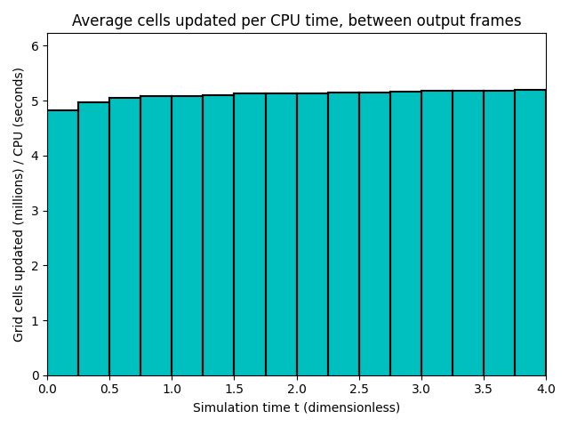

Datetime: 2020-04-23 20:01 From: /Users/rjl/clawpack_src/clawpack_master/amrclaw/examples/advection_2d_swirl/_output
============================== Timing Data ==============================
Integration Time (stepgrid + BC + overhead)
Level Wall Time (seconds) CPU Time (seconds) Total Cell Updates
1 0.122 0.120 0.197E+06
2 0.320 0.602 0.123E+07
3 4.425 12.742 0.259E+08
total 4.867 13.463 0.273E+08
All levels:
stepgrid 4.538 12.788
BC/ghost cells 0.260 0.602
Regridding 0.494 1.146
Output (valout) 3.547 3.437
Total time: 8.962 18.125
Using 3 thread(s)
Note: The CPU times are summed over all threads.
Total time includes more than the subroutines listed above
Note: timings are also recorded for each output step
in the file timing.csv.
clock_rate = 1000000000 per second, count_max = 9223372036854775807
clock_start = 1587697255962054000, clock_finish = 1587697264927959000
=========================================================================


